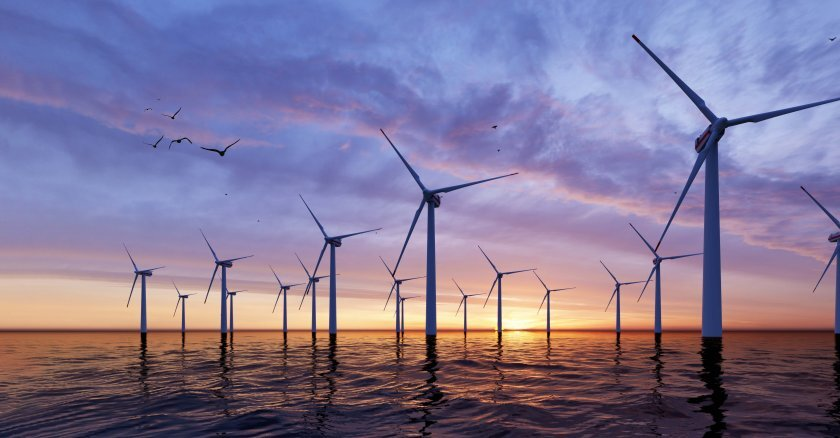
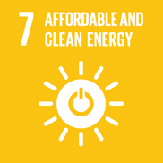

UK Energy Monitor is a data-driven system for tracking national and regional electricity generation, carbon emissions, and renewable energy targets. Built to support transparent reporting on the UK's progress toward a cleaner energy future.

View live charts and summaries of UK electricity generation by source and region, updated from the database.
Run detailed SQL-driven reports comparing renewable share, emissions trends, and progress against targets.
Enter new data into the system's database, such as generation records and new targets.
Learn about the purpose of this system, the data sources used, and how it aligns with the UN Sustainable Development Goals.

This system supports Sustainable Development Goal 7 by providing transparent, evidence-based monitoring of the UK's shift toward affordable, reliable, and clean energy sources — helping track progress against national and international targets.